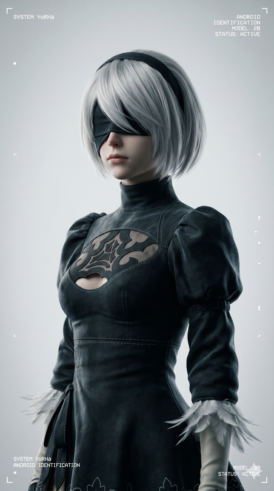
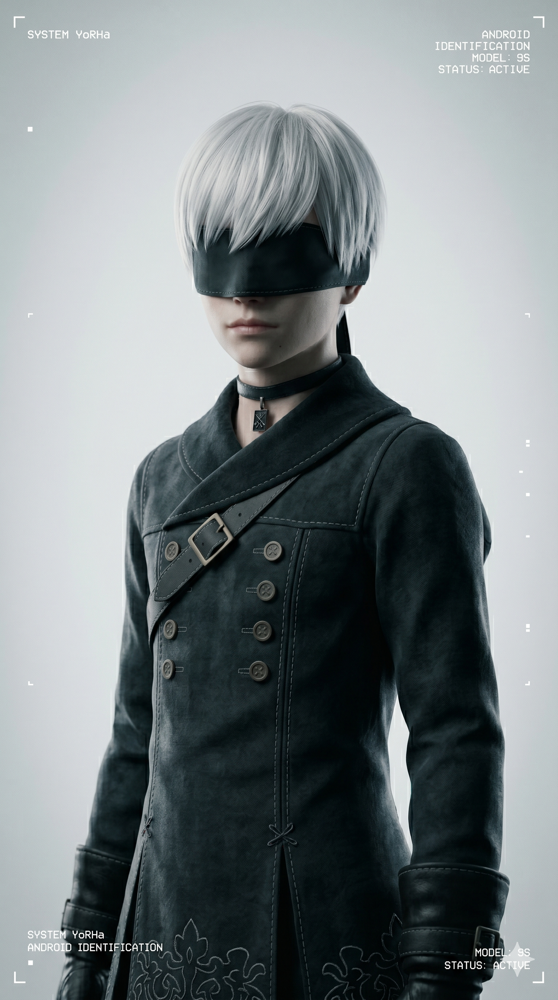
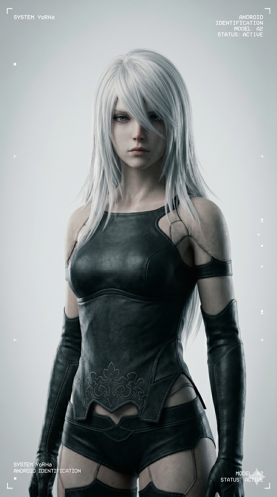

Pods de Soporte Táctico
Unidad de ApoyoDispositivos de soporte táctico utilizados por las unidades YoRHa. Equipados con sistemas de combate, análisis y asistencia avanzada.
- Modelos: Pod 042 / Pod 153
- Función: Soporte de Combate
Registro de unidades YoRHa y entidades relevantes
Dispositivos de soporte táctico utilizados por las unidades YoRHa. Equipados con sistemas de combate, análisis y asistencia avanzada.

Unidad de combate diseñada para operaciones terrestres y eliminación de amenazas mecánicas.

Unidad especializada en análisis táctico, soporte operativo y hackeo avanzado.

Antigua unidad experimental YoRHa reconocida por su brutal capacidad ofensiva.